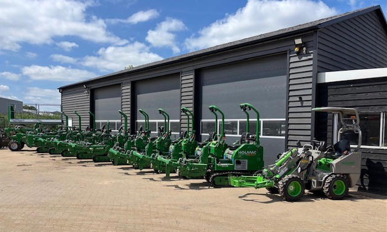
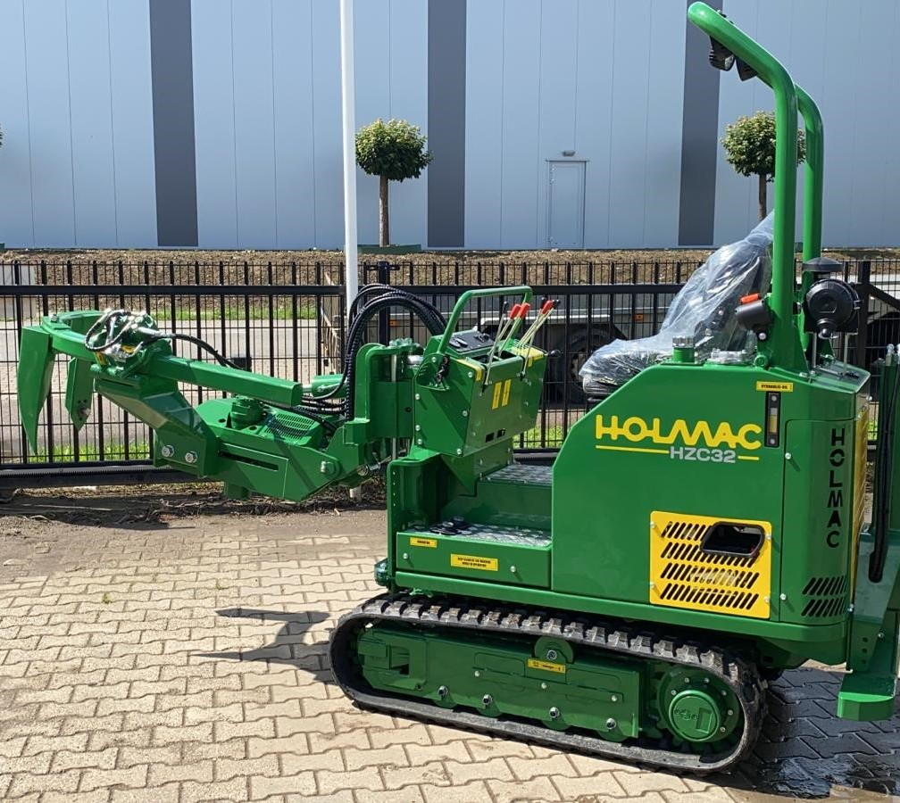
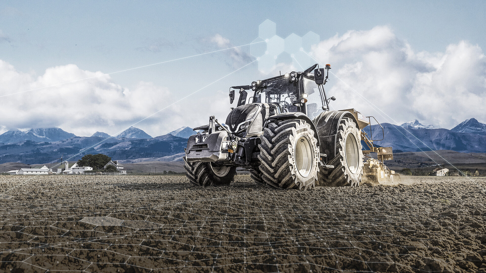

Persoonlijk
U heeft rechtstreeks contact met iemand die uw vraag technisch kan beoordelen en meedenkt over de oplossing.
Mechanisatiebedrijf in Kesteren
Persoonlijk contact en een oplossing die aansluit op de dagelijkse praktijk.
Over G. van de Kolk
G. van de Kolk B.V. is gevestigd in Kesteren, direct naast het laanboomcentrum van Opheusden. Van oorsprong ligt de kracht in boomkwekerijmachines, las- en constructiewerk, service en onderhoud.
Die praktische basis is nog altijd leidend. U krijgt persoonlijk contact, technisch advies en een oplossing die past bij de machine én het werk waarvoor u die gebruikt.
Vanuit die basis ondersteunen we professionals in boomkwekerij, landbouw, tuin en park — met korte lijnen en zonder onnodige schakels.


Waar we voor staan
Geen grote woorden, maar duidelijke afspraken en technisch werk waar u mee verder kunt.
U heeft rechtstreeks contact met iemand die uw vraag technisch kan beoordelen en meedenkt over de oplossing.
De toepassing staat centraal. Een oplossing moet betrouwbaar zijn en passen bij hoe u dagelijks werkt.
Zorgvuldig uitgevoerd onderhoud, reparatie en constructiewerk met aandacht voor veiligheid en inzetbaarheid.

Midden in de regio
De ligging tussen Kesteren en Opheusden betekent korte lijnen met boomkwekers en directe kennis van kluitenrooien, intern transport, grondbewerking en seizoensdrukte.
Die regionale specialisatie combineren we met brede technische ervaring aan trekkers, werktuigen en compact materieel.
Wat u kunt verwachten
Bij een eerste contact bespreken we om welke machine en toepassing het gaat. Daarna maken we duidelijk welke informatie nodig is en wat een logische vervolgstap is.
Kennismaken
Met een korte omschrijving, merk en type van de machine kunnen we u meestal sneller helpen.